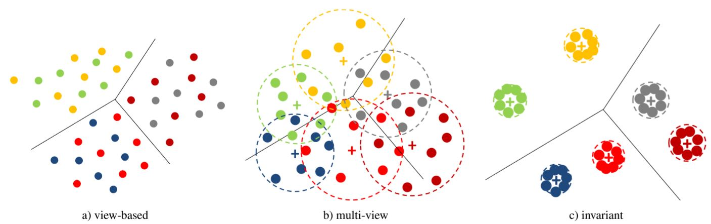

Publication

PIEs: Pose Invariant Embeddings
Chih-Hui Ho,
Pedro Morgado,
Amir Persekian,
Nuno Vasconcelos
IEEE Conference on Computer Vision and Pattern Recognition (CVPR), Long Beach, California, United States, 2019
[Webpage]
[Paper]
[Supplementary material]

PIEs: Pose Invariant Embeddings
Chih-Hui Ho*,
Brandon Leung*,
Erik Sandstrom,
Yen Chang,
Nuno Vasconcelos
(*indicate equal contribution)
IEEE Conference on Computer Vision and Pattern Recognition (CVPR), Long Beach, California, United States, 2019
[Webpage]
[Paper]
[Supplementary material]
Rule-Based Optical Character Recognition for Serial Number on Renminbi Banknote
Yu-Shiuan Tsai, Yi-Yu Hsieh, Chih-Hui Ho, Ya-Ching Chang, Yao-Yuan Chang, Heng-Jyun Lin, Han-Yang Wang, Yu-Chen Chou, and Jen-Hui Chuang